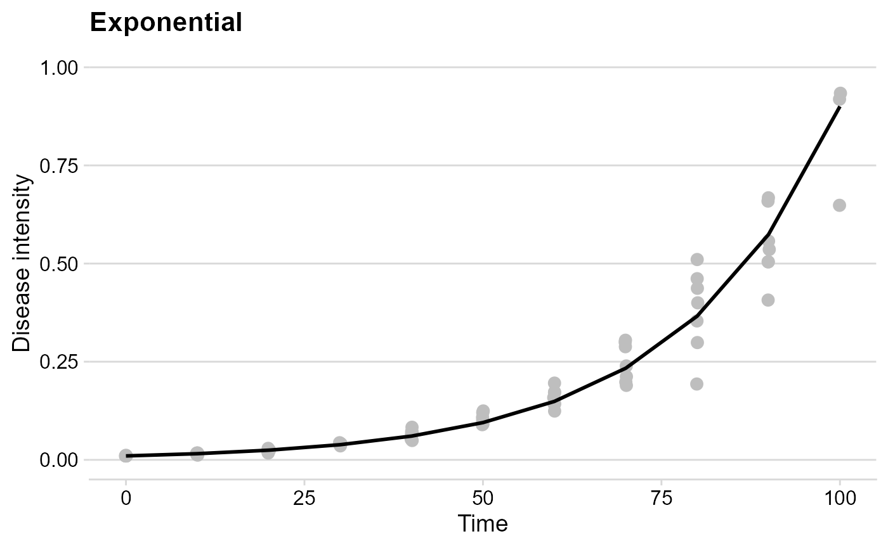

Simulating disease progress curves
Kaique S Alves
2020-09-03
Source:vignettes/simulation.Rmd
simulation.RmdIntroduction
Use epiffiter to simulate disease progress curves (DPCs). You can simulate using the classic epidemiological models: Exponential, Monomolecular, Logistic, and Gompertz.
Hands On
Simulating DPCs for different models
The exponential model
Use the function sim_exponential() to simulate DPCs using the exponential model. The N defines the total time course of the epidemic. Define dt, which is the time interval between disease intensity values. Define initial inoculum y0 and the apparent infection rate r. The function allow you to simulate more than one value of disease intesity per time point, that is, replicates! So you need to define the number of replicates at n. The argument alpha is the variation parameter for the replicates. (see details at ?sim_exponential).
exp_model <- sim_exponential( N = 100, y0 = 0.01, dt = 5, r = 0.045, alpha = 0.2, n = 7 ) head(exp_model)
## replicates time y random_y
## 1 1 0 0.01000000 0.01000000
## 2 1 5 0.01252459 0.01389141
## 3 1 10 0.01568619 0.01582446
## 4 1 15 0.01964549 0.01987844
## 5 1 20 0.02460372 0.01696022
## 6 1 25 0.03081292 0.03716165The function returns a data.frame object with four columns. replicates indicate each respective replicate, in time we have the time steps, y contains the simulated values of disease intensity, and random_y contains values of disease intensity after inserting a variation.
Use the ggplot2 package to build impressive graphics!
exp_plot = exp_model %>% ggplot(aes(time, y)) + geom_jitter(aes(time, random_y), size = 3,color = "gray", width = .1) + geom_line(size = 1) + theme_minimal_hgrid() + ylim(0,1)+ labs( title = "Exponential", y = "Disease intensity", x = "Time" ) exp_plot
## Warning: Removed 1 rows containing missing values (geom_point).
The Monomolecular model
For the other models is exactly the same pipeline.
mono_model <- sim_monomolecular( N = 100, y0 = 0.01, dt = 5, r = 0.05, alpha = 0.2, n = 7 ) head(mono_model)
## replicates time y random_y
## 1 1 0 0.0100000 0.01175541
## 2 1 5 0.2289861 0.26938876
## 3 1 10 0.3995322 0.46768475
## 4 1 15 0.5323535 0.60372582
## 5 1 20 0.6357949 0.69037453
## 6 1 25 0.7163551 0.72352318mono_plot = mono_model %>% ggplot(aes(time, y)) + geom_jitter(aes(time, random_y), size = 3, color = "gray", width = .1) + geom_line(size = 1) + theme_minimal_hgrid() + labs( title = "Monomolecular", y = "Disease intensity", x = "Time" ) mono_plot

The Logistic model
logist_model <- sim_logistic( N = 100, y0 = 0.01, dt = 5, r = 0.1, alpha = 0.2, n = 7 ) head(logist_model)
## replicates time y random_y
## 1 1 0 0.01000000 0.01182410
## 2 1 5 0.01638216 0.02243123
## 3 1 10 0.02672677 0.03517020
## 4 1 15 0.04331509 0.04566653
## 5 1 20 0.06946352 0.07973668
## 6 1 25 0.10958806 0.14630726logist_plot = logist_model %>% ggplot(aes(time, y)) + geom_jitter(aes(time, random_y), size = 3,color = "gray", width = .1) + geom_line(size = 1) + theme_minimal_hgrid() + labs( title = "Logistic", y = "Disease intensity", x = "Time" ) logist_plot

The Gompertz model
gomp_model <- sim_gompertz( N = 100, y0 = 0.01, dt = 5, r = 0.07, alpha = 0.2, n = 7 ) head(gomp_model)
## replicates time y random_y
## 1 1 0 0.01000000 0.01000000
## 2 1 5 0.03896283 0.02781954
## 3 1 10 0.10158896 0.17139308
## 4 1 15 0.19958740 0.25500520
## 5 1 20 0.32122825 0.29216068
## 6 1 25 0.44922018 0.38142302gomp_plot = gomp_model %>% ggplot(aes(time, y)) + geom_jitter(aes(time, random_y), size = 3,color = "gray", width = .1) + geom_line(size = 1) + theme_minimal_hgrid() + labs( title = "Gompertz", y = "Disease intensity", x = "Time" ) gomp_plot

Combo
Use the function plot_grid() from the cowplot package to gather all plots into a grid
plot_grid(exp_plot, mono_plot, logist_plot, gomp_plot)
## Warning: Removed 1 rows containing missing values (geom_point).